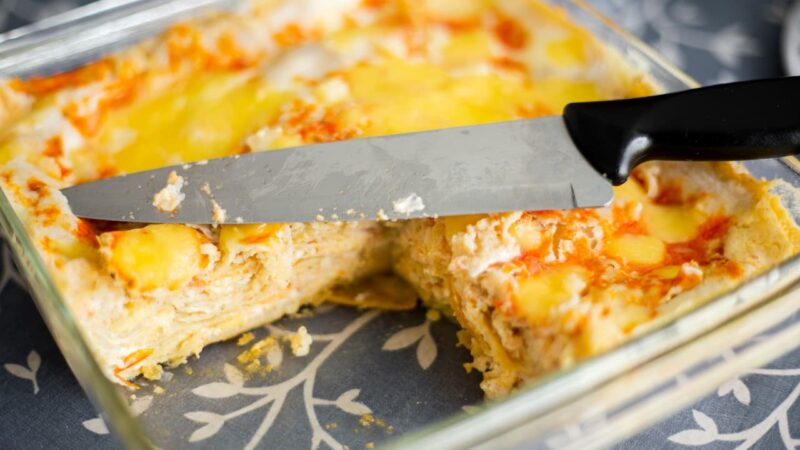

Pastel azteca: Todo sobre la lasaña a la mexicana
Publicado por Paulina Cocina / 10 de abril de 2023

This is a Front-End development and web design portfolio project made by Eleonora Rodriguez.
Check the the original website so you can compare it to the changes I've made in this rework.
All images, videos, and recipes belong to Paulina Cocina.
¡Bienvenidos y bienvenidas a Paulina Cocina una vez más! Hoy quiero invitarlos a preparar un plato riquísimo y típicamente mexicano, que combina muchos sabores tradicionales de ese hermoso país.
El pastel azteca es ideal para una comida sustanciosa y bien sabrosa. Una preparación que reúne muchos ingredientes en un plato, hecho con capas de tortilla y carne, de forma similar a la lasaña italiana, pero con sabores bien mexicanos. ¡A cocinar!
La historia del pastel azteca
La cultura azteca fue una de las más importantes en México antes de la llegada de los españoles en el siglo XVI. La comida era un aspecto muy importante para esa cultura, ya que consumían una gran variedad de alimentos, incluyendo maíz, chiles, frijoles, carnes, pescados y mariscos. Los alimentos se preparaban de muchas maneras diferentes, incluyendo la cocción en hornos de barro y la utilización de técnicas de molienda y mezcla para crear salsas y aderezos.
Con la llegada de los españoles y la introducción de ingredientes como la carne de res y cerdo, el queso y las especias, la cocina mexicana experimentó un gran cambio. La influencia española se puede ver en la utilización de la técnica de horneado, que se utiliza, en este caso, para preparar el pastel.
Más allá de sus influencias este plato ha logrado tal popularidad en México que forma parte de su tradición culinaria y se puede disfrutar en los encuentros familiares de muchos hogares, pero también en restaurantes y puestos de comida. Su popularidad se debe, en gran parte, a su sabor delicioso y a su versatilidad, ya que se puede hacer con diferentes rellenos y es fácil de preparar.
Pastel azteca tradicional
Para preparar el pastel se coloca una capa de tortillas de maíz, que se puede tostar o freír un poco para darle textura y sabor.
Encima de la capa de tortillas, se coloca una capa de carne, que puede ser de res o de pollo, previamente cocida y deshebrada (desmenuzada). La carne se mezcla con una salsa de tomate y chiles, que le da un sabor picante y ligeramente dulce.
Sobre la capa de carne se agrega otra capa de tortillas. Este proceso se repite varias veces, hasta que se llega a la altura deseada para el pastel. La capa superior debe ser de queso rallado o mozzarella fresca, que se funde y dora en el horno para darle una textura y color típicos del gratinado.
Pastel azteca poblano
El pastel azteca poblano es una variante del pastel azteca tradicional, originario de la región de Puebla, México. Se prepara en capas, con una base de tortillas de maíz, intercaladas con una mezcla de chile poblano, granos de elote, pollo deshebrado (desmenuzado) y salsa de tomate.
El chile poblano es uno de los ingredientes principales de esta variante, ya que le da un sabor único y ligeramente picante. Los granos de elote, además, le aportan un dulzor y una textura suave y crujiente.
Con qué acompañar el pastel azteca
El pastel azteca se suele acompañar con guacamole, crema agria y cilantro fresco. Si bien de por sí es un plato muy completo que combina distintos alimentos como carne, verduras, chiles, tomates y tortillas, también se pueden elegir acompañamientos o guarniciones para una comida bien integral y sabrosa.
Si te interesa seguir degustando sabor a mexico, te va a interesar conocer estas 10 recetas de comida mexicana que no podes perderte!
- Cebolla y cilantro: Finamente picados son una guarnición clásica para muchos platillos mexicanos y no es la excepción con el pastel azteca de pollo.
- Aguacate: un poco de aguacate (palta) en rodajas por encima del pastel azteca de pollo aporta sabor y textura suave y cremosa.
- Ensalada fresca: Una ensalada de lechuga, tomate, palta y cilantro fresco es una excelente opción para acompañar el pastel azteca. La frescura de los vegetales complementará los sabores intensos del pastel.
- Frijoles refritos: son el complemento perfecto para el pastel azteca. Se pueden servir como guarnición o incluso colocar una capa de frijoles refritos entre las capas de tortillas del pastel. ¡Quedan deliciosos!
- Arroz blanco: Una guarnición tradicional que combina muy bien con el pastel azteca. La suavidad del arroz contrasta con la textura crujiente de las tortillas del pastel.
Receta de pastel azteca de pollo
Porciones:
6 a 8
Preparación:
45min
Ingredientes
- 12 tortillas de maíz
- 2 pechugas de pollo cocidas y deshebradas (desmenuzadas)
- 1 cebolla blanca picada
- 2 dientes de ajo picados
- 1 chile poblano asado y cortado en tiras
- 1 taza de elote dulce en grano
- 2 tazas de salsa de tomate
- 1 taza de queso rallado en hebras o mozzarella
- Aceite
- Sal y pimienta a gusto
Cómo se hace el pastel azteca de pollo
- Antes que nada precalentar el horno a 180°C.
- En una sartén, calentar un poco de aceite y saltear la cebolla con los dientes de ajo hasta que estén dorados.
- Agregar el pollo cocido y deshebrado (hervido unos 20 minutos en agua con sal), el chile poblano, el elote dulce y la salsa de tomate. Cocina a fuego medio por 10 minutos. Agrega sal y pimienta al gusto.
- En otra sartén, calentar un poco de aceite y freír ligeramente las tortillas para que queden suaves, pero no doradas. Reservarlas sobre un papel absorbente.
- En un recipiente refractario para horno, colocar una capa de tortillas y encima de ellas, una capa de la mezcla de pollo y salsa. Repetir las capas hasta que se terminen los ingredientes. La última capa debe estar cubierta con el queso rallado.
- Hornear el pastel azteca durante 20-25 minutos, hasta que el queso se derrita y se dore.
- Servir caliente y ¡a disfrutar!
Mas recetas con éstos ingredientes:
- Ajo
- Cebolla
- Queso
- Tomate